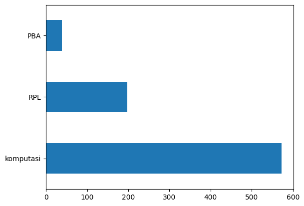

Mengolah data PTA#
setelah melakukan pelabelan pada data tahap selanjutnya yaitu melakukan preprocessing data dan memasukkan model ke dalamnya.
import numpy as np
import pandas as pd
df = pd.read_csv('https://raw.githubusercontent.com/Tegar11-F/Data-Set/main/Data_PTA.csv')
# df = df.drop(['Unnamed: 0.1'], axis=1)
df.head()
| NPM | Judul | Abstrak | Prodi | Label | |
|---|---|---|---|---|---|
| 0 | 40411100468 | PERANCANGAN DAN IMPLEMENTASI SISTEM DATABASE T... | Sistem informasi akademik (SIAKAD) merupaka... | Teknik Informatika | RPL |
| 1 | 40411100476 | APLIKASI KONTROL DAN MONITORING JARINGAN KOMPU... | Berjalannya koneksi jaringan komputer dengan l... | Teknik Informatika | RPL |
| 2 | 40411100480 | RANCANG BANGUN APLIKASI PROXY SERVER UNTUKENKR... | Web server adalah sebuah perangkat lunak serve... | Teknik Informatika | RPL |
| 3 | 70411100070 | SISTEM PENDUKUNG KEPUTUSAN OPTIMASI PENJADWALA... | Penjadwalan kuliah di Perguruan Tinggi me... | Teknik Informatika | komputasi |
| 4 | 80411100115 | SISTEM AUGMENTED REALITY ANIMASI BENDA BERGERA... | Seiring perkembangan teknologi yang ada diduni... | Teknik Informatika | komputasi |
pengecekan data kosong dan pembersihan#
# count nan value
df.isnull().sum()
NPM 0
Judul 6
Abstrak 25
Prodi 0
Label 43
dtype: int64
df.dropna(inplace=True)
df.isnull().sum()
NPM 0
Judul 0
Abstrak 0
Prodi 0
Label 0
dtype: int64
df.count()
NPM 810
Judul 810
Abstrak 810
Prodi 810
Label 810
dtype: int64
df.head()
| NPM | Judul | Abstrak | Prodi | Label | |
|---|---|---|---|---|---|
| 0 | 40411100468 | PERANCANGAN DAN IMPLEMENTASI SISTEM DATABASE T... | Sistem informasi akademik (SIAKAD) merupaka... | Teknik Informatika | RPL |
| 1 | 40411100476 | APLIKASI KONTROL DAN MONITORING JARINGAN KOMPU... | Berjalannya koneksi jaringan komputer dengan l... | Teknik Informatika | RPL |
| 2 | 40411100480 | RANCANG BANGUN APLIKASI PROXY SERVER UNTUKENKR... | Web server adalah sebuah perangkat lunak serve... | Teknik Informatika | RPL |
| 3 | 70411100070 | SISTEM PENDUKUNG KEPUTUSAN OPTIMASI PENJADWALA... | Penjadwalan kuliah di Perguruan Tinggi me... | Teknik Informatika | komputasi |
| 4 | 80411100115 | SISTEM AUGMENTED REALITY ANIMASI BENDA BERGERA... | Seiring perkembangan teknologi yang ada diduni... | Teknik Informatika | komputasi |
# Jumlah data pada masing-masing label KBK
df['Label'].value_counts()
komputasi 573
RPL 198
PBA 39
Name: Label, dtype: int64
import matplotlib.pyplot as plt
df['Label'].value_counts().plot(kind='barh')
plt.show()

text processing#
##text cleanning
pada tahap ini dilakukan penghapusan tanda baca
import re, string
# Text Cleaning
def cleaning(text):
# HTML Tag Removal
text = re.compile('<.*?>|&([a-z0-9]+|#[0-9]{1,6}|#x[0-9a-f]{1,6});').sub('', str(text))
# Case folding
text = text.lower()
# Trim text
text = text.strip()
# Remove punctuations, karakter spesial, and spasi ganda
text = re.compile('<.*?>').sub('', text)
text = re.compile('[%s]' % re.escape(string.punctuation)).sub(' ', text)
text = re.sub('\s+', ' ', text)
# Number removal
text = re.sub(r'\[[0-9]*\]', ' ', text)
text = re.sub(r'[^\w\s]', '', str(text).lower().strip())
text = re.sub(r'\d', ' ', text)
text = re.sub(r'\s+', ' ', text)
# Mengubah text 'nan' dengan whitespace agar nantinya dapat dihapus
text = re.sub('nan', '', text)
return text
df['Judul'] = df['Judul'].apply(lambda x: cleaning(x))
df['Abstrak'] = df['Abstrak'].apply(lambda x: cleaning(x))
df.head()
| NPM | Judul | Abstrak | Prodi | Label | |
|---|---|---|---|---|---|
| 0 | 40411100468 | perancangan dan implementasi sistem database t... | sistem informasi akademik siakad merupakan sis... | Teknik Informatika | RPL |
| 1 | 40411100476 | aplikasi kontrol dan monitoring jaringan kompu... | berjalannya koneksi jaringan komputer dengan l... | Teknik Informatika | RPL |
| 2 | 40411100480 | rancang bangun aplikasi proxy server untukenkr... | web server adalah sebuah perangkat lunak serve... | Teknik Informatika | RPL |
| 3 | 70411100070 | sistem pendukung keputusan optimasi penjadwala... | penjadwalan kuliah di perguruan tinggi merupak... | Teknik Informatika | komputasi |
| 4 | 80411100115 | sistem augmented reality animasi benda bergera... | seiring perkembangan teknologi yang ada diduni... | Teknik Informatika | komputasi |
# Checkpoint: Export Hasil Text Cleaning
df.to_csv('pta-cleaning.csv')
Remove Missing Values#
pada tahap ini jika terdapat string yang kosong maka di ubah menjadi NaN value
# Ubah empty string menjadi NaN value
df = df.replace('', np.nan)
# Cek missing values
df.isnull().sum()
NPM 0
Judul 0
Abstrak 0
Prodi 0
Label 0
dtype: int64
# Remove missing values
df.dropna(inplace=True)
len(df)
810
Remove Duplicate Values#
pada tahap ini dilakukan pengecekan apakah ada judul abstrak yang duplikat atau tidak
# Cek apakah terdapat duplikasi data pada kolom judul
df[df['Judul'].duplicated()]
| NPM | Judul | Abstrak | Prodi | Label | |
|---|---|---|---|---|---|
| 728 | 120411100015 | sistem pendukung keputusan pemilihan pemain bo... | peningkatan pembinaan permai bola voli terutam... | Teknik Informatika | komputasi |
# Remove duplicates judul
df.drop_duplicates(subset=['Judul'], inplace=True)
# Cek apakah masih terdapat duplikasi data pada kolom judul
df[df['Judul'].duplicated()]
| NPM | Judul | Abstrak | Prodi | Label |
|---|
# Cek apakah terdapat duplikasi data pada kolom abstrak
df[df['Abstrak'].duplicated()]
| NPM | Judul | Abstrak | Prodi | Label |
|---|
# Remove duplicates abstrak
df.drop_duplicates(subset=['Abstrak'], inplace=True)
# Cek apakah masih terdapat duplikasi data pada kolom abstrak
df[df['Abstrak'].duplicated()]
| NPM | Judul | Abstrak | Prodi | Label |
|---|
# Checkpoint: Export Hasil Preprocessing
df.to_csv('preprocessed-pta.csv')
# Distribusi Kelas setelah Text Preprocessing
df['Label'].value_counts().plot(kind='barh')
plt.show()
Tokenization#
pada tahap ini dilakukan pemecahan kalimat menjadi per kata
import nltk
nltk.download('punkt')
from nltk.tokenize import word_tokenize
# Tokenizing Judul
df['judul_tokens'] = df['Judul'].apply(lambda x: word_tokenize(x))
df[["Judul", "judul_tokens"]].head()
[nltk_data] Downloading package punkt to /root/nltk_data...
[nltk_data] Unzipping tokenizers/punkt.zip.
| Judul | judul_tokens | |
|---|---|---|
| 0 | perancangan dan implementasi sistem database t... | [perancangan, dan, implementasi, sistem, datab... |
| 1 | aplikasi kontrol dan monitoring jaringan kompu... | [aplikasi, kontrol, dan, monitoring, jaringan,... |
| 2 | rancang bangun aplikasi proxy server untukenkr... | [rancang, bangun, aplikasi, proxy, server, unt... |
| 3 | sistem pendukung keputusan optimasi penjadwala... | [sistem, pendukung, keputusan, optimasi, penja... |
| 4 | sistem augmented reality animasi benda bergera... | [sistem, augmented, reality, animasi, benda, b... |
# Tokenizing Abstrak
df['abstrak_tokens'] = df['Abstrak'].apply(lambda x: word_tokenize(x))
df[["Abstrak", "abstrak_tokens"]].head()
| Abstrak | abstrak_tokens | |
|---|---|---|
| 0 | sistem informasi akademik siakad merupakan sis... | [sistem, informasi, akademik, siakad, merupaka... |
| 1 | berjalannya koneksi jaringan komputer dengan l... | [berjalannya, koneksi, jaringan, komputer, den... |
| 2 | web server adalah sebuah perangkat lunak serve... | [web, server, adalah, sebuah, perangkat, lunak... |
| 3 | penjadwalan kuliah di perguruan tinggi merupak... | [penjadwalan, kuliah, di, perguruan, tinggi, m... |
| 4 | seiring perkembangan teknologi yang ada diduni... | [seiring, perkembangan, teknologi, yang, ada, ... |
Stop Words Removal#
pada tahap ini dilakukan penghilangan kata hubung
import nltk
nltk.download('stopwords')
from nltk.corpus import stopwords
from itertools import chain
stop_words = set(chain(stopwords.words('indonesian'), stopwords.words('english')))
df['judul_tokens'] = df['judul_tokens'].apply(lambda x: [w for w in x if not w in stop_words])
df['abstrak_tokens'] = df['abstrak_tokens'].apply(lambda x: [w for w in x if not w in stop_words])
[nltk_data] Downloading package stopwords to /root/nltk_data...
[nltk_data] Unzipping corpora/stopwords.zip.
df[["Judul", "judul_tokens"]].head()
| Judul | judul_tokens | |
|---|---|---|
| 0 | perancangan dan implementasi sistem database t... | [perancangan, implementasi, sistem, database, ... |
| 1 | aplikasi kontrol dan monitoring jaringan kompu... | [aplikasi, kontrol, monitoring, jaringan, komp... |
| 2 | rancang bangun aplikasi proxy server untukenkr... | [rancang, bangun, aplikasi, proxy, server, unt... |
| 3 | sistem pendukung keputusan optimasi penjadwala... | [sistem, pendukung, keputusan, optimasi, penja... |
| 4 | sistem augmented reality animasi benda bergera... | [sistem, augmented, reality, animasi, benda, b... |
df[["Abstrak", "abstrak_tokens"]].head()
| Abstrak | abstrak_tokens | |
|---|---|---|
| 0 | sistem informasi akademik siakad merupakan sis... | [sistem, informasi, akademik, siakad, sistem, ... |
| 1 | berjalannya koneksi jaringan komputer dengan l... | [berjalannya, koneksi, jaringan, komputer, lan... |
| 2 | web server adalah sebuah perangkat lunak serve... | [web, server, perangkat, lunak, server, berfun... |
| 3 | penjadwalan kuliah di perguruan tinggi merupak... | [penjadwalan, kuliah, perguruan, kompleks, per... |
| 4 | seiring perkembangan teknologi yang ada diduni... | [seiring, perkembangan, teknologi, didunia, mu... |
Stemming#
pada tahap ini dilakukan peubahan kata kerja menjadi kata dasar
!pip install Sastrawi
Looking in indexes: https://pypi.org/simple, https://us-python.pkg.dev/colab-wheels/public/simple/
Collecting Sastrawi
Downloading Sastrawi-1.0.1-py2.py3-none-any.whl (209 kB)
?25l ━━━━━━━━━━━━━━━━━━━━━━━━━━━━━━━━━━━━━━━━ 0.0/209.7 KB ? eta -:--:--
━━━━━━━━━━━━━━━━━━━━━━━━━━━━━━━━━━━━━━ 209.7/209.7 KB 10.1 MB/s eta 0:00:00
?25h
Installing collected packages: Sastrawi
Successfully installed Sastrawi-1.0.1
from Sastrawi.Stemmer.StemmerFactory import StemmerFactory
from tqdm.auto import tqdm
tqdm.pandas()
factory = StemmerFactory()
stemmer = factory.create_stemmer()
# Stemming judul
df['judul_tokens'] = df['judul_tokens'].progress_apply(lambda x: stemmer.stem(' '.join(x)).split(' '))
KeyboardInterruptTraceback (most recent call last)
<ipython-input-29-e0b86e6d011c> in <cell line: 2>()
1 # Stemming judul
----> 2 df['judul_tokens'] = df['judul_tokens'].progress_apply(lambda x: stemmer.stem(' '.join(x)).split(' '))
/usr/local/lib/python3.9/dist-packages/tqdm/std.py in inner(df, func, *args, **kwargs)
803 # on the df using our wrapper (which provides bar updating)
804 try:
--> 805 return getattr(df, df_function)(wrapper, **kwargs)
806 finally:
807 t.close()
/usr/local/lib/python3.9/dist-packages/pandas/core/series.py in apply(self, func, convert_dtype, args, **kwargs)
4431 dtype: float64
4432 """
-> 4433 return SeriesApply(self, func, convert_dtype, args, kwargs).apply()
4434
4435 def _reduce(
/usr/local/lib/python3.9/dist-packages/pandas/core/apply.py in apply(self)
1086 return self.apply_str()
1087
-> 1088 return self.apply_standard()
1089
1090 def agg(self):
/usr/local/lib/python3.9/dist-packages/pandas/core/apply.py in apply_standard(self)
1141 # List[Union[Callable[..., Any], str]]]]]"; expected
1142 # "Callable[[Any], Any]"
-> 1143 mapped = lib.map_infer(
1144 values,
1145 f, # type: ignore[arg-type]
/usr/local/lib/python3.9/dist-packages/pandas/_libs/lib.pyx in pandas._libs.lib.map_infer()
/usr/local/lib/python3.9/dist-packages/tqdm/std.py in wrapper(*args, **kwargs)
798 # take a fast or slow code path; so stop when t.total==t.n
799 t.update(n=1 if not t.total or t.n < t.total else 0)
--> 800 return func(*args, **kwargs)
801
802 # Apply the provided function (in **kwargs)
<ipython-input-29-e0b86e6d011c> in <lambda>(x)
1 # Stemming judul
----> 2 df['judul_tokens'] = df['judul_tokens'].progress_apply(lambda x: stemmer.stem(' '.join(x)).split(' '))
/usr/local/lib/python3.9/dist-packages/Sastrawi/Stemmer/CachedStemmer.py in stem(self, text)
18 stems.append(self.cache.get(word))
19 else:
---> 20 stem = self.delegatedStemmer.stem(word)
21 self.cache.set(word, stem)
22 stems.append(stem)
/usr/local/lib/python3.9/dist-packages/Sastrawi/Stemmer/Stemmer.py in stem(self, text)
25
26 for word in words:
---> 27 stems.append(self.stem_word(word))
28
29 return ' '.join(stems)
/usr/local/lib/python3.9/dist-packages/Sastrawi/Stemmer/Stemmer.py in stem_word(self, word)
34 return self.stem_plural_word(word)
35 else:
---> 36 return self.stem_singular_word(word)
37
38 def is_plural(self, word):
/usr/local/lib/python3.9/dist-packages/Sastrawi/Stemmer/Stemmer.py in stem_singular_word(self, word)
82 """Stem a singular word to its common stem form."""
83 context = Context(word, self.dictionary, self.visitor_provider)
---> 84 context.execute()
85
86 return context.result
/usr/local/lib/python3.9/dist-packages/Sastrawi/Stemmer/Context/Context.py in execute(self)
35
36 #step 1 - 5
---> 37 self.start_stemming_process()
38
39 #step 6
/usr/local/lib/python3.9/dist-packages/Sastrawi/Stemmer/Context/Context.py in start_stemming_process(self)
83
84 #ECS loop pengembalian akhiran
---> 85 self.loop_pengembalian_akhiran()
86
87 def remove_prefixes(self):
/usr/local/lib/python3.9/dist-packages/Sastrawi/Stemmer/Context/Context.py in loop_pengembalian_akhiran(self)
139
140 #step 4,5
--> 141 self.remove_prefixes()
142 if self.dictionary.contains(self.current_word):
143 return
/usr/local/lib/python3.9/dist-packages/Sastrawi/Stemmer/Context/Context.py in remove_prefixes(self)
87 def remove_prefixes(self):
88 for i in range(3):
---> 89 self.accept_prefix_visitors(self.prefix_pisitors)
90 if self.dictionary.contains(self.current_word):
91 return
/usr/local/lib/python3.9/dist-packages/Sastrawi/Stemmer/Context/Context.py in accept_prefix_visitors(self, visitors)
108 removalCount = len(self.removals)
109 for visitor in visitors:
--> 110 self.accept(visitor)
111 if self.dictionary.contains(self.current_word):
112 return self.current_word
/usr/local/lib/python3.9/dist-packages/Sastrawi/Stemmer/Context/Context.py in accept(self, visitor)
95
96 def accept(self, visitor):
---> 97 visitor.visit(self)
98
99 def accept_visitors(self, visitors):
/usr/local/lib/python3.9/dist-packages/Sastrawi/Stemmer/Context/Visitor/AbstractDisambiguatePrefixRule.py in visit(self, context)
13 for disambiguator in self.disambiguators:
14 result = disambiguator.disambiguate(context.current_word)
---> 15 if context.dictionary.contains(result):
16 break
17
KeyboardInterrupt:
# Hasil stemming judul
df[["Judul", "judul_tokens"]].head()
| Judul | judul_tokens | |
|---|---|---|
| 0 | perancangan dan implementasi sistem database t... | [ancang, implementasi, sistem, database, distr... |
| 1 | aplikasi kontrol dan monitoring jaringan kompu... | [aplikasi, kontrol, monitoring, jaring, komput... |
| 2 | rancang bangun aplikasi proxy server untukenkr... | [rancang, bangun, aplikasi, proxy, server, unt... |
| 3 | sistem pendukung keputusan optimasi penjadwala... | [sistem, dukung, putus, optimasi, jadwal, mata... |
| 4 | sistem augmented reality animasi benda bergera... | [sistem, augmented, reality, animasi, benda, g... |
# Stemming abstrak
df['abstrak_tokens'] = df['abstrak_tokens'].progress_apply(lambda x: stemmer.stem(' '.join(x)).split(' '))
# Hasil stemming Abstrak
df[["Abstrak", "abstrak_tokens"]].head()
| Abstrak | abstrak_tokens | |
|---|---|---|
| 0 | sistem informasi akademik siakad merupakan sis... | [sistem, informasi, akademik, siakad, sistem, ... |
| 1 | berjalannya koneksi jaringan komputer dengan l... | [jalan, koneksi, jaring, komputer, lancar, gan... |
| 2 | web server adalah sebuah perangkat lunak serve... | [web, server, perangkat, lunak, server, berfun... |
| 3 | penjadwalan kuliah di perguruan tinggi merupak... | [jadwal, kuliah, guru, kompleks, masalah, vari... |
| 4 | seiring perkembangan teknologi yang ada diduni... | [iring, kembang, teknologi, dunia, muncul, tek... |
pengabungan semua hasil dari text processing#
df['abstrak_tokens'] = df['abstrak_tokens'].apply(lambda x: ' '.join(x))
df
| NPM | Judul | Abstrak | Prodi | Label | judul_tokens | abstrak_tokens | |
|---|---|---|---|---|---|---|---|
| 0 | 40411100468 | perancangan dan implementasi sistem database t... | sistem informasi akademik siakad merupakan sis... | Teknik Informatika | RPL | [ancang, implementasi, sistem, database, distr... | sistem informasi akademik siakad sistem inform... |
| 1 | 40411100476 | aplikasi kontrol dan monitoring jaringan kompu... | berjalannya koneksi jaringan komputer dengan l... | Teknik Informatika | RPL | [aplikasi, kontrol, monitoring, jaring, komput... | jalan koneksi jaring komputer lancar ganggu ha... |
| 2 | 40411100480 | rancang bangun aplikasi proxy server untukenkr... | web server adalah sebuah perangkat lunak serve... | Teknik Informatika | RPL | [rancang, bangun, aplikasi, proxy, server, unt... | web server perangkat lunak server berfungsimen... |
| 3 | 70411100070 | sistem pendukung keputusan optimasi penjadwala... | penjadwalan kuliah di perguruan tinggi merupak... | Teknik Informatika | komputasi | [sistem, dukung, putus, optimasi, jadwal, mata... | jadwal kuliah guru kompleks masalah variabel t... |
| 4 | 80411100115 | sistem augmented reality animasi benda bergera... | seiring perkembangan teknologi yang ada diduni... | Teknik Informatika | komputasi | [sistem, augmented, reality, animasi, benda, g... | iring kembang teknologi dunia muncul teknologi... |
| ... | ... | ... | ... | ... | ... | ... | ... |
| 848 | 160411100032 | penerapan algoritma long short term memory unt... | investasi saham selama ini memiliki resiko ker... | Teknik Informatika | komputasi | [terap, algoritma, long, short, term, memory, ... | investasi saham milik resiko rugi dikarenakanp... |
| 849 | 160411100182 | sistem pencarian teks al quran terjemahan berb... | information retrieval ir merupakan pengambilan... | Teknik Informatika | PBA | [sistem, cari, teks, al, quran, terjemah, baha... | information retrieval ir ambil informasi simpa... |
| 850 | 160411100077 | klasifikasi kompleksitas visual citra sampah m... | klasifikasi citra merupakan proses pengelompok... | Teknik Informatika | komputasi | [klasifikasi, kompleksitas, visual, citra, sam... | klasifikasi citra proses kelompok piksel citra... |
| 851 | 160411100084 | identifikasi biner atribut pejalan kaki menggu... | identifikasi atribut pejalan kaki merupakan sa... | Teknik Informatika | komputasi | [identifikasi, biner, atribut, pejal, kaki, ad... | identifikasi atribut pejal kaki salah teliti k... |
| 852 | 160411100044 | deteksi objek manusia berbasis one stage detec... | topik deteksi objek telah menarik perhatian ya... | Teknik Informatika | komputasi | [deteksi, objek, manusia, bas, one, stage, det... | topik deteksi objek tarik perhati kembang tekn... |
809 rows × 7 columns
Split Data#
from sklearn.model_selection import train_test_split
X = df['abstrak_tokens']
y = df['Label']
X
0 sistem informasi akademik siakad sistem inform...
1 jalan koneksi jaring komputer lancar ganggu ha...
2 web server perangkat lunak server berfungsimen...
3 jadwal kuliah guru kompleks masalah variabel t...
4 iring kembang teknologi dunia muncul teknologi...
...
848 investasi saham milik resiko rugi dikarenakanp...
849 information retrieval ir ambil informasi simpa...
850 klasifikasi citra proses kelompok piksel citra...
851 identifikasi atribut pejal kaki salah teliti k...
852 topik deteksi objek tarik perhati kembang tekn...
Name: abstrak_tokens, Length: 809, dtype: object
Feature Extraction: TF-IDF#
from sklearn.feature_extraction.text import TfidfVectorizer
vectorizer = TfidfVectorizer()
X_tfidf = vectorizer.fit_transform(X)
# X_test_tfidf = vectorizer.transform(X_test)
X_tfidf.shape
(809, 6442)
PCA#
from sklearn.decomposition import PCA
pca = PCA(n_components=10)
X = pca.fit_transform(X_tfidf.toarray())
terms = vectorizer.get_feature_names_out()
sums = X_tfidf.sum(axis=0)
data = []
for col, term in enumerate (terms):
data.append((term, sums[0,col]))
ranking = pd.DataFrame(data, columns=['term', 'rank'])
print(ranking.sort_values('rank', ascending=False))
term rank
5376 sistem 32.339549
1173 data 28.965659
939 citra 28.863548
3609 metode 28.713771
2085 hasil 27.121133
... ... ...
3887 numberabstrakberbagai 0.051212
2479 jarimenggunakan 0.051212
5160 seirver 0.040808
264 analyzer 0.040808
6364 wireshark 0.040808
[6442 rows x 2 columns]
spilt data fitur extrasi PCA#
X_train, X_test, y_train, y_test = train_test_split(X, y, test_size=0.3, random_state=42)
MODELING#
model KNN#
from sklearn.neighbors import KNeighborsClassifier
# Buat pengklasifikasi KNN
knn = KNeighborsClassifier(n_neighbors = 5)
# Sesuaikan pengklasifikasi dengan data
knn.fit(X_train,y_train)
KNeighborsClassifier()In a Jupyter environment, please rerun this cell to show the HTML representation or trust the notebook.
On GitHub, the HTML representation is unable to render, please try loading this page with nbviewer.org.
KNeighborsClassifier()
#periksa keakuratan model kami pada data uji
knn.score(X_test, y_test)
0.831275720164609
Model Naive Nayes#
from sklearn.naive_bayes import GaussianNB
gnb = GaussianNB()
model_gnb = gnb.fit(X_train,y_train)
prediction_gnb = model_gnb.predict(X_test)
from sklearn.metrics import classification_report
print(classification_report(y_test,prediction_gnb))
precision recall f1-score support
PBA 0.41 0.88 0.56 17
RPL 0.50 0.81 0.62 53
komputasi 0.93 0.64 0.76 173
accuracy 0.70 243
macro avg 0.61 0.78 0.64 243
weighted avg 0.80 0.70 0.71 243